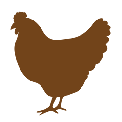
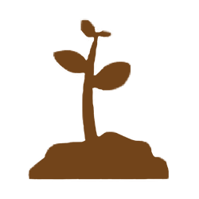
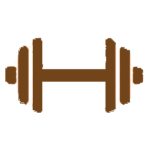

You probably know about me professionally by now, so let me introduce myself on a more personnal note.
- Who I am -
First thing first, I'm passionate about movies and series which are a huge part of my inspiration. One might say I'm always elaborating new scenarios in my dreams. Also the type of person who can one day, relax and listen peacefully to some music, and another day, dance and party like there's no tomorrow. I am able to adapt myself in any kind of environment. Basically, I love having fun. Pretty simple right?
- What I like -
Well, obviously I like Harry Potter. I enjoy a lot of things, mostly basic things people like. Not really interested into social medias though. And I absolutely love to travel. I try to expand my countries visited checklist every year. So here's some of my recent activities.



Finland, Ireland, Mauritius Island, Norway, Germany... what's next?
- What I'm proud of -
I think self awareness is one of the most important thing in a person. And I believe being proud of what matters to you is the best reward you can get.
- ‣ Road trip alone in Norway during 2 months with only a backpack
- ‣ First functionnal website coding all by myself
- ‣ Internship in a lab, working from scratch in a project involving Curiosity and traces of organic matters on Mars
- ‣ First scuba diving in the Indian Ocean near Mauritius Island